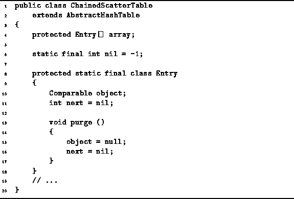

Data Structures and Algorithms
with Object-Oriented Design Patterns in Java
Data Structures and Algorithms
with Object-Oriented Design Patterns in Java
The ChainedScatterTable class is introduced
in Program  .
This class extends the AbstractHashTableClass
introduced in Program .
The scatter table is implemented as an array of Entry objects.
The Entry class is a static inner class
defined within the ChainedScatterTable class.
.
This class extends the AbstractHashTableClass
introduced in Program .
The scatter table is implemented as an array of Entry objects.
The Entry class is a static inner class
defined within the ChainedScatterTable class.

Program: ChainedScatterTable fields and ChainedScatterTable.Entry class.
Each Entry instance has two fields--object and next. The former refers to a Comparable object. The latter indicates the position in the array of the next element of a chain. The value of the enumerated constant nil will be used instead of zero to mark the end of a chain. The value zero is not used to mark the end of a chain because zero is a valid array subscript. Notice that the default value for the next field is nil.
 Copyright © 1998 by Bruno R. Preiss, P.Eng. All rights reserved.
Copyright © 1998 by Bruno R. Preiss, P.Eng. All rights reserved.